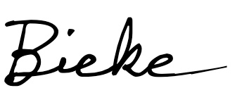

Een floriste met een droom dompelt zich onder in de bloemenwereld… op ontdekking in het bloemenveld en helemaal zen in haar atelier… Daar vindt ze bloemengeluk dat ze dankzij Haverklap kan delen met de mensen uit de buurt.
Een oppeppertje, een gelukwens, een bedankje of een verwenmoment? Zeg het met een bloemeke! Bestel voor elke gelegenheid een bloemwerkje op maat. Ik zorg voor een persoonlijke touch zodat je boodschap er ‘boenk’ op zit.
En hoe komt je boodschap nog beter over? Als de bloemekes het juiste dialect ‘klappen’. Lokale, propere bloemen worden gekweekt op boerderij De Zwanenberg in Kalmthout. In de zomer vers van het veld, in de winter gedroogd op de zolder!
